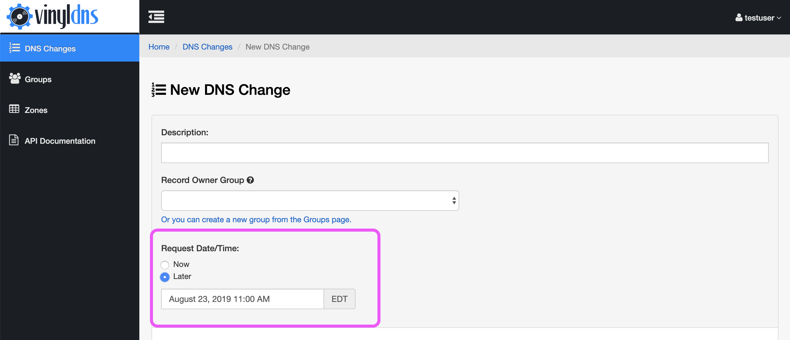

DNS Changes: Manual Review & Scheduling
Configuration Note: DNS Change manual review and scheduling are configured features in VinylDNS. Check with your VinylDNS administrators to determine if they are enabled in your instance.**
- Manual Review
- Scheduling
- Filter by Open Requests
- Cancelling DNS Changes
- Reviewing Pending DNS Changes (administrators only)
Manual Review
If a DNS Change is submitted with only non-fatal errors you will be notified to either correct those errors or submit your DNS Change for manual review. If you submit the DNS Change for manual review a VinylDNS administrator will determine if your request can be approved or if it needs to be rejected. After the review your DNS Change will include the review details, including the review status, reviewer name, review time and review comment, if provided.
{kind=link}
{kind=link}
Scheduling
VinylDNS processes DNS Changes immediately, unless they have a Request Date and Time. The day and time must be in the future. The portal accepts and returns the Request Date and Time as your local time. A VinylDNS administrator will review the DNS Change after the requested time and either approve or reject it for processing. 
{kind=link}
Filter by Open Requests
If you have many DNS Changes you may find it helpful to filter your list of requests by those that are currently open. In the top right corner of the DNS Changes table is a checkbox labeled “View Open Requests Only”. If the checkbox is selected the DNS Changes list will be limited to only Pending Review and Scheduled DNS Changes.
{kind=link}
Cancelling DNS Changes
Users can cancel any DNS Change they create if it has a review status of “Pending Review”. Either select the “Cancel” button in the main DNS Changes list or the “Cancel” button in the DNS Change Detail page. A modal will appear for the user to confirm the cancellation.
{kind=link}
{kind=link}
Reviewing Pending DNS Changes
VinylDNS administrators can use the portal to review DNS Changes.
In the DNS Changes view there are two tabs, “My Requests” and “All Requests”. “My Requests” are only your own DNS Changes. “All Requests” are requests by everyone in the VinylDNS instance. Both tabs can be filtered by open requests.
{kind=link}
On the detail page for a DNS change that is pending review, administrators will see a review section beneath the list of single changes. The administrator can provide a comment, then choose Approve or Reject and finally confirm their choice. If the DNS Change is approved and there are no new errors or it’s rejected then the review is completed and the DNS Change status and review information is updated. If the DNS Change still has errors after the approval attempt, the page will display the new errors and the administrator needs to address those or reject the DNS change.
{kind=link}
{kind=link}